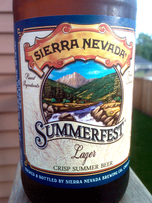

My mate Gaz, the king of yokels, loves his Old Rosie
I’m a firm believer that there’s a beer out there for everyone. My favorite is Smithwicks, although my fridge is at the moment loaded with Bud Light Lime (it’s >90 degrees here, and that stuff is refreshing, so shut up).
Down my way we’d just call it tap water 
Surely you can’t be talking about Smithwick’s. I’m under the impression St. James Gate needs to promote this beer a lot more than they do Guinness. It is such an underrated beer. It’s a million time more complex than say its English counterpart Newcastle.
Budlime, anything Bud for that matter is useless in my expert opinion. Oddly enough, I understand Anheuser-Busch to be a fantastic beer company before WWII. Due to rationing; however, they had to cut back on important ingredients that make up a good beer such as hops, barley, etc. We have a generation of men 60 years later that are now used to drinking this ball fondly wanker water and they won’t drink anything else. Anheuser-Busch doesn’t get a pass by any means since they had plenty of time to return to their roots.


That dog needs to be taken to a vet, stat :fffuuu:
You’ll probably find that applies to people drinking god-awful mass produced brands, like your overly sweet and fizzy lagers (Stella Artois, Calrsberg, Carling) or your bland keg bitters and stouts that have had their flavour killed by pasteurisation and being actively pumped with nitrogen (Stones, John Smiths, Guinness, Caffries) or sold in cans with ‘widgets’.
These days, the only sector of beer sales that’s on the increase in the UK is Real Ale, and people generally get onto that through the enthusiastic recommendations of nerdy beer-lovers like myself, or through visiting beer festivals and sampling some of the enormous range of flavour real ale has to offer.
Basically I said avoid the big brands like Magners, Bulmers and Strongbow, and of the more traditional cider makers you’ll probably be most likely to find Westons, with which you can’t go wrong on any of their ciders (Old Rosie is the most famous).
Innes & Gunn is more aged in whiskey barrels, the main fermentation is part of the brewing that goes on beforehand (although I’m sure they leave some yeast in there for secondary fermentation, as happens in the barrels that go to real ale pubs). It is rather tasty.
Indeed. My Dad once took great amusement from a Bud advert he found in a magazine. It was attempting to show of the tradition and heritage of the beer with a procession of the different bottle labels down the years, but he found it more enlightening to look closely and see the point at which it became massively adulterated with cheap rice and never went back.
More people should try the real stuff: Budweiser Budvar, from the Czech Republic region of Budweis. American Bud has strayed a long, long way from its roots.
Anyway, epic post over.
Hey, I’m a true Scotsman, I prefer my Single Malts.
Aye, 'tis the booze culture I was referring to - people who like beer for what it represents, not how it tastes. I guess it’s a bigger problem in Britain than elsewhere.
I don’t like beer in general - too bitter for my liking - but I have brewed my own ginger ale (or, more accurately, helped a friend brew some), and I can definitely confirm that home-made beer knocks seven shades of crap out of mass-produced rubbish.
Bottom line: if it’s beer and it doesn’t still have yeasty residue in the bottom of the bottle, it’s probably not worth drinking . That being said, I do rather like Kopparberg, despite it being a mass-produced cider. It doesn’t have the same unpleasant bitterness of most ciders I’ve tasted.
Oh, and before anyone complains that ginger ale is a girly sort of beer, it was something like 7.5%. Not for the faint hearted, lol.
Good man on the Single Malts, right with you there.
There are beers (and if you extend your rule about yeast sediment in the bottom to the barrel as well as bottle, it covers real hand-pulled ale) of such variety, I’m sure you could find one not too bitter for you. The biggest difference between the basic flavours of whisky and beer are the hoppy bitterness in beer, and some of the flavours picked up from the casks they’re aged in with whisky (although the aforementioned Innes & Gunn brings that ito the beer world), and it was in recognising the similar malty flavours in good whisky as are in good beers that crossed me over into being a fan of scotch single malts.
I can attest to that - my favourite single malt is the Balvenie 12yr Doublewood - aged in an oak cask then finished in a sherry cask. Gorgeously smooth.
I love sherry cask whiskys, though I’ve only had the common or garden 10 year old (I think?) Balvenie. I only have a little left and they don’t seem to do it any more (or it was some limited special) but I’m a huge fan of Glenfiddich Solera reserve, which is aged in madeira casks - beautiful.
Well met. I love single malts as well, though being an American (an American of Scottish decent mind you), they are pretty damn expensive. I’ve tried a good number of scotches, but I have to say my favorite distilling region has got to be Islay. I prefer the smoky peated taste and I always have a bottle of 10 yr old Laphroaig on hand when the mood suits me and I need to have a nip or two (or three, or four, or…ten, eleven).
Not to mention the higher proof and the styles in which they are manufactured.
Speaking of hops, two months ago a friend and I planted 5 hop plants (cascade) and they have grown almost 12 feet! They are remarkable plants. They loo good and the smell great not to mention that they will produce all the whole hops we will ever need.
Ya, I know. I’ll post pictures on Monday.
Oh no my friend. Until now, I thought it was just the United States, but it appears to be a worldwide problem. It seriously pisses me off when people go into an awesome retailer like Bevmo (Beverages and More is a chain retailer on the west coast that specializes in a very wide variety of beer, wine, and spirits) and they come out with a 30 Pack of Coors Light. I mean come on! I get it, you want to get drunk! But at least enjoy what you are drinking. I will have a Scottish single malt over a Tennessee sour mash any day of the week and price be damned!
I’m a big fan of Islays myself. Laphroaig is great but I’m a big fan of Ardbeg myself.
Looking forward to seeing pics of your hops!
As for drinking tasteless shite just to get drunk, it is a worldwide phenomenon but we Brits are, sadly, particularly good at it. We have big problems with booze-fuelled loutish behaviour over here, and it makes those of us who drink responsibly look bad and hits us with knock-on effects whenever the Government tries anything to curb the problem. If everyone had your attitude Reverend, we’d all be much better off.
I’m currently drinking:

I simply cannot allow this thread to die.
I apologize for my long, silent absence. I do realize that I owe the lot of you a picture of the hop garden and will get on that, but recently I’ve been busy with my partners on the next brewing season.
Up in the queue:
Cherry American Wheat
Blueberry Hefeweizen
Claymore Honey IPA
Claymore Imperial Hefeweizen
Lemon Lime Crystal Wheat
Lemon Drop Lager
It is a hot one and we want to make beer that is refreshing yet on the lighter side of the malt spectrum.
Stay tuned, updates to come.
Good man.
last time i was in the UK, Liverpool more precisely, i went there with my father. the attraction for him was the beatles heavy theme, everything to see. i love them too, but you see, i’m a major beer nerd, and the english pubs have 3 times cheaper beer than ours. and at that time there was some sort of Real Ale Festival going on throughout the city. which means there was an endless adventure of obscure ales and bitters to try, as opposed to our regular bland lagers.
it was paradise.
one part i can’t shake off though, was my father’s unrefined taste. the times he was the most enthusiastic was when he got to sample John Smiths and Caffries. and it’s the same with most people i know. they prefer what they know and the fancy ones with personality are scary and incomprehensible i guess.
Yuenglings.
Also: gtfo Danson
I love you too sweetie muah